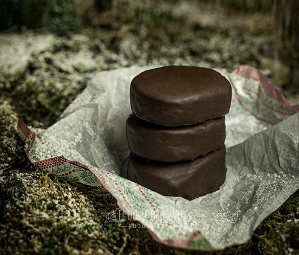

POLVORONES DE CHOCOLATE
Ingredientes PARA 35 UNIDADES:
- 500 gr. harina tostada.
- 125 gr. almendra molida tostada.
- 300 gr. manteca de cerdo.
- 200 gr. azúcar glass.
- 40 gr. cacao puro en polvo.
- 40 gr. canela en polvo (esto un poco al gusto)
- 50 gr. chocolate picado en trocitos.
- 400 gr. chocolate negro para la cobertura.
- 20 gr. manteca de cacao o aceite de coco.
Preparación:
- Partimos de tener la harina y la almendra tostadas y frías.
- Precalentamos el horno a 180º con calor arriba y abajo.
- Tamizamos todos los ingredientes secos, la harina, la almendra, el azúcar glass, la canela y el cacao puro y mezclamos para que se quede homogéneo.
- Si lo hacemos a máquina, con la pala, comenzamos a mover a velocidad baja y vamos incorporando la manteca de cerdo. Lo podemos hacer a mano son problema, empezando a mezclar con una cucharada de madera y cuando no podamos, a mano..
- Cuando tengamos una masa compacta, añadimos los trocitos de chocolate picado y mezclamos nuevamente.
- En este paso, si queréis, se puede envolver la masa en film y meter en el frigo durante una hora para que coja algo de consistencia, pero yo lo suelo hacer directamente.
- Espolvoreo un poco de de harina tostada en la superficie, por debajo y por encima de la masa y estiro hasta tener un grosor aprox. de 1.5 cm.
- Cortamos con un cortador de galletas. Yo he escogido uno ovalado, pero puede ser perfectamente redondo.
- En la bandeja de horno, ponemos papel de hornear, y vamos colocando nuestros polvorones en ella, dejando un poco de espacio entre ellos.
- Horneamos a 180º durante 13 minutos aprox. controlando que no se nos quemen.
- Sacamos del horno, y dejamos enfriar por completo sobre la misma bandeja, si los tocamos antes, se nos van a desparramar y tendremos unas bonitas tortas de polvorón jeje.
- Con ellos bien fríos, ponemos sobre una rejilla para darles el baño de chocolate, poniendo debajo una bandeja que recoja el excedente de chocolate que va a caer.
- Fundimos el chocolate al baño María o en el microondas junto con la manteca de cacao o con el aceite de coco, lo que hayamos escogido y tengamos en casa.
- Mezclamos bien, y con una jarra, vamos dando un baño a nuestros polvorones, que estén bien cubiertos.
- Sacudimos un poco la rejilla para que caiga el exceso y dejamos enfriar por completo para que se ponga la capa de chocolate durita.
- Y DISFRUTAMOS
